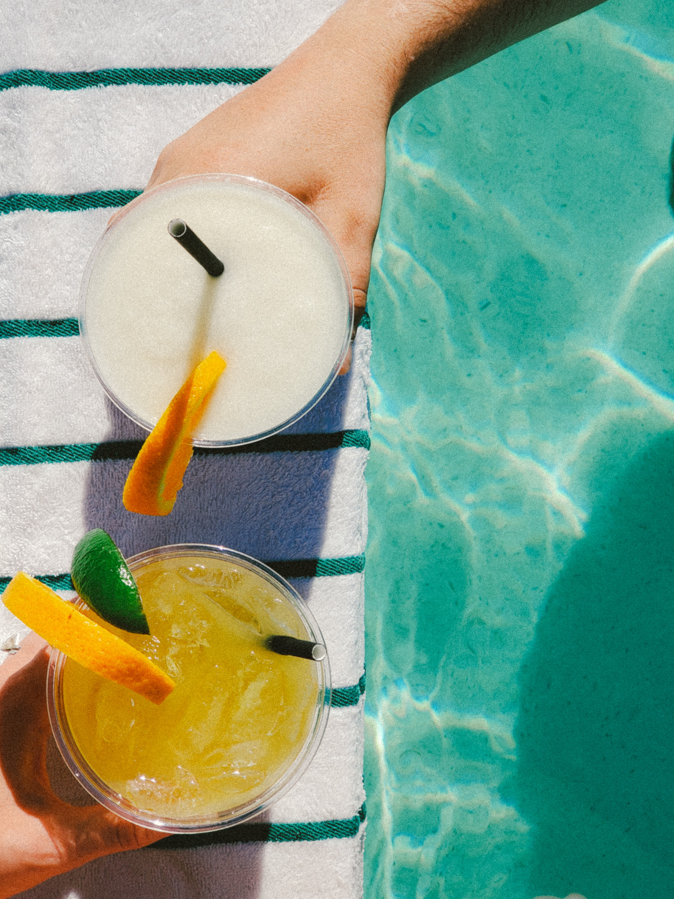

Big Batch Peach Sangria

Description
A peach sangria is a refreshing drink, guaranteed to please the crowd. A less boozy than the other big batch drinks for a tamer suaree.
Ingredients
- 1 bottle Savignon Blanc
- 1/4 C peach schnapps
- 1/4 C peach nectar
- 1/4 C granulated sugar
- sliced peaches
- mixed berries
- seltzer water
Instructions
- In a large pitcher add wine, peach schnapps, peach nectar, and granulated sugar.
- Stir to combine and let sit in fridge for at least 1 hour, but ideally for 12 hours.
- Shortly before serving, taste the mixture and add more peach nectar if you need more sweetness and add your desired fruits.
- For serving, add ice to a glass, pour in sangria with fruit and top with seltzer water.